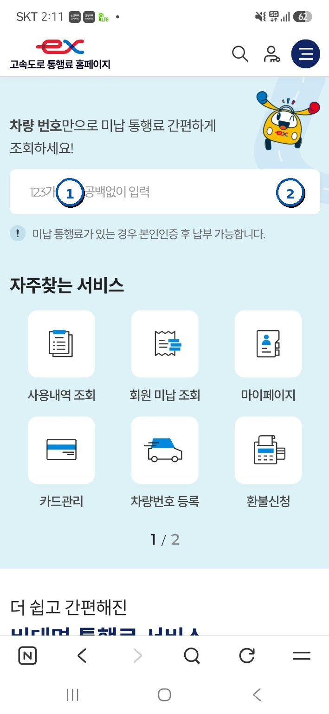
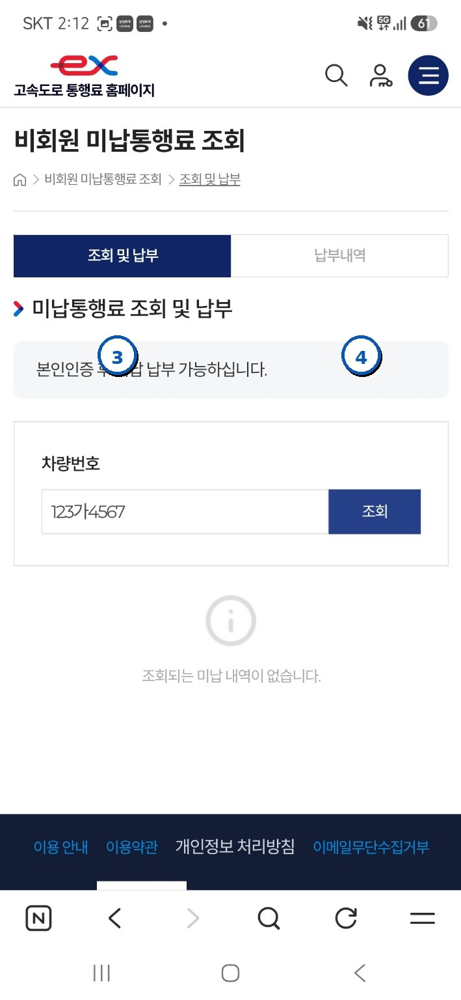

외국인을 위한 미납통행료 조회·납부 안내
하이패스 홈페이지 이용방법 및 납부안내 연락처를 안내합니다.
한국어 · English · Tiếng Việt · 中文 · Русский · Bahasa Indonesia


하이패스 홈페이지 이용방법 및 납부안내 연락처를 안내합니다.
공식 하이패스 홈페이지의 실제 화면을 따라 진행하세요.
아래 ‘하이패스 홈페이지 바로가기’를 이용합니다.
차량번호를 공백 없이 입력합니다.
돋보기 또는 조회 버튼을 누릅니다.
화면의 안내에 따라 미납내역을 확인합니다.
이용 가능한 결제수단을 선택해 납부를 완료합니다.


하이패스 홈페이지가 한국어로 표시될 때 브라우저의 번역 기능을 이용하세요.
오른쪽 위의 ⋮ 메뉴를 누릅니다.

메뉴에서 번역 기능을 선택합니다.

원하는 언어를 선택하면 페이지가 번역됩니다.

온라인 이용이 어려운 경우 아래 방법으로 납부 안내를 받을 수 있습니다.
온라인 이용이 어렵거나 미납 발생 일시·이용구간 등 상세 확인이 필요한 경우 가까운 영업소를 방문하세요.
미납통행료와 관련해 알아둘 내용을 확인하세요.